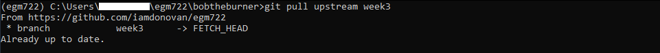

vector data using shapely and geopandas#
In this practical, you’ll gain some more experience working with vector data in python. You will learn about the different vector data types available in the shapely package, and how we can use the geopandas package to perform different vector data operations and analyses.
The practicals this week are provided as Jupyter Notebooks, where you can interactively work through the different steps of plotting the data. There is another file, exercise_script.py, which you can modify to perform additional analyses, based on what you’ve learned in the Jupyter Notebook and the mapping exercise in Practical 2.
Note
You should also see an example script, examples/week3_example.py. Be sure to try out the exercise and see if you can’t figure out a solution on your own, before having a look at the (one of many possible) solution offered there.
getting started#
Last week, we saw how we can synchronize branches of our fork on GitHub. We also saw how we can use
GitHub Desktop to merge two branches (in this case, week2 into main). This week, we’re going to see how to
do these things using the command line.
To get started with this week’s practical, open Anaconda Navigator, then launch the Anaconda Command Prompt - either from Anaconda Navigator (make sure that your egm722 environment is selected), or from the Start Menu.
When the Command Prompt opens, navigate to your repository folder using cd, then type dir and press Enter.
For example, if the path to your repository folder is C:\Users\bob\egm722, you should run the command:
cd C:\Users\bob\egm722
Followed by dir. You should then see something similar to the following:

Here, you can see a list of the different files in the directory, similar to what you can see in
Windows Explorer.
Note
On Mac OS, the command to show the files in the directory is ls.
Switch to the week3 branch by typing:
git checkout week3
and pressing Enter.
Note
If you see some version of the following:
hint: If you meant to check out a remote tracking branch on, e.g., 'origin',
hint: you can do so by fully qualifying the name with the --track option:
hint:
hint: git checkout --track origin/<name>
hint:
hint: If you'd like to always have checkouts of an ambiguous <name> prefer
hint: one remote, e.g. the 'origin' remote, consider setting
hint: checkout.defaultRemote=origin in your config
What this is telling you is that you either have to explicitly specify which remote branch
you want to check out (e.g., origin or upstream), or you should set your
defaultRemote option using git config by running the following command:
git config --global checkout.defaultRemote origin
Next, type dir and press Enter again. You should now see this - the files in the current directory have changed,
because git has updated the working directory when we switched branches:
{kind=link}
To merge the week3 branch of our repository into main, we’ll use git from the command line.
Remember that at the start of last week’s practical, we discussed the difference between local, origin, and upstream branches:
local branches are the ones stored locally on your computer,
origin branches are the branches of your repository stored on GitHub,
upstream branches are the branches of the repository that you forked the egm722 repository from (iamdonovan/egm722).
As we saw last week, there may be changes to the upstream repository that we want to integrate into our local version of a repository.
For example, for this module I may have added an additional exercise to the practical in one week, and you
want to make sure that you have this before you merge that week’s branch into the main branch.
To be able to keep track of the upstream changes, we need to make sure that our local repository knows where the upstream repository is. First, double-check what remote (not local) repositories git is keeping track of by typing the following at the command line:
git remote -v
This will list the remote repositories, and their nicknames. You should see an output like this:

Note
If you only see origin, then we need to add the upstream remote location using git remote add:
git remote add upstream https://github.com/iamdonovan/egm722.git
This adds the URL for the upstream repository (iamdonovan/egm722.git) to our local configuration.
You can check that this worked by typing git remote -v again - you should now see two lines
for the upstream repository, along with two lines for the origin repository.
Now, we can tell git to specifically pull the upstream version of a particular branch:
git pull upstream <branch>
This will pull (fetch and merge) the upstream version of <branch> (if it exists) into the local version of the current branch.
For example, git pull upstream week3 would merge the upstream week3 branch into our current branch (week3).
Go ahead and enter this command now:
git pull upstream week3
If you see the following output:
{kind=link}
This indicates that there’s been no change to the upstream branch that isn’t already in our origin branch.
You may also see output that indicates there are changes to the upstream branch that aren’t present in our origin (or local) branch:
{kind=link}
As long as you don’t have any conflicts between the two branches, you should see that git does a
“fast-forward” merge, as shown above - that is, git will just update the local branch by moving it forward in
the shared history between the upstream and local versions.
Note
If you do see a message indicating conflicts between different versions of your branches:
{kind=link}
You will need to resolve those conflicts in a similar way to what you did last week before you are able to move forward - it’s probably best to ask for some help on blackboard here.
As long as there are no changes (or git was able to fast-forward), though, let’s switch back to the main branch:
git checkout main
And enter the following command:
git merge week3
You should now see the following output in the window (again, what you see may differ slightly):

This tells us what files have been changed (18 files) and how (854 insertions(+)). Because none the files
in the Week3 folder were present in the main branch, we’ll only see additions/insertions. As you work on your
project and commit changes to existing files, you’ll also see deletions (lines that are deleted or changed).
You should also see Weeks 1–3 in your repository folder:

Just as we saw last week, now that we have merged our week3 branch into main, we can prune (delete)
it. The command line syntax for this is:
git branch -d <name>
Where <name> is the name of the branch we want to delete. If <name> has not been fully integrated into our
current branch, you may see a warning like the following:
{kind=link}
Otherwise, you should see a message like this:
{kind=link}
Once you have deleted the Finally, let’s push these changes to your GitHub repository:
git push
As before, you can confirm that the changes are now on your remote repository by heading over to GitHub:

At this point, you can launch Jupyter Notebooks as you have in the previous weeks, and begin to work through the
practical exercise.
Note
Below this point is the non-interactive text of the notebook. To actually run the notebook, you’ll need to follow the instructions above to open the notebook and run it on your own computer!
Rachel McAdams#
overview#
Up to now, you have gained some experience working with basic features of python, and used cartopy and matplotlib to create a map. In each of these practicals, you have loaded different vector datasets using a module called geopandas. In this week’s practical, we’ll be looking at working vector data in a bit more depth, including the different geometry types available using shapely, analyses like spatial joins and summarizing based on attributes, and how to reproject vector data from one coordinate reference system to another.
objectives#
Gain experience working with different vector data types using shapely
Use geopandas to re-project vector datasets from one coordinate reference system to another
Learn about and used vectorized operations
Summarize features using the groupby method of a GeoDataFrame
Learn how to perform different vector data operations using geopandas and shapely
data provided#
In the data_files folder, you should have the following:
NI_roads.shp, a shapefile of roads in Northern Ireland
Counties.shp, a shapefile of county outlines for Northern Ireland
NI_Wards.shp, a shapefile of electoral wards for Northern Ireland
getting started#
In this practical, we’ll be working with vector data. As a quick refresher, the three main types of vector data that we will work with are:
Point: point data represent a single point in space. For our purposes, points are either two-dimensional (x, y) or three-dimensional (x, y, z). In
shapely, the corresponding class of data is a Point.Line: lines are a sequence of at least two points that are joined together. In
shapely, the corresponding class of data is known as a LineString.Polygon: polygons are a sequence of at least three points that are connected to form a ring, as well as any additional rings that represent holes in the polygon. In
shapely, the corresponding class of data is a Polygon.
We can also have Collections of vector data, where each feature
represents a collection of Point, Line, or Polygon objects.
In shapely, these are represented as MultiPoint,
MultiLineString, or MultiPolygon objects.
To get started, run the following cell to import geopandas and
shapely.
# this lets us show the figures, but not interactively
%matplotlib inline
import pandas as pd
import geopandas as gpd
from shapely.geometry import Point, LineString, Polygon
shapely geometry types#
Points#
As we saw in Week 1, to create a Point, we pass x, y (and optionally, z) coordinates to the Point class constructor (documentation):
pt = Point(-6.677, 55.150) # creates a 2d point with coordinates -6.677, 55.150
pt2 = Point(-6.658, 55.213) # creates a 2d point with coordinates -6.658, 55.213
pt3d = Point(86.925278, 27.988056, 8848.86) # creates a 3d point
print(pt) # print a well-known text (WKT) representation of the Point object
The last line, print(pt), prints a
well-known-text
(WKT) representation of the Point object. WKT is a standard
representation of vector geometry objects - most python libraries
and GIS softwares are able to read and/or translate WKT into other
formats, such as ESRI Shapefiles, GeoJSON, etc.
Remember that in python, we can find the attributes and methods for an
object by looking up the documentation (for shapely, this can be found
here), or
using the built-in function dir(). To find out more about a
particular function, we can use the built-in function help() (or, in
jupyter notebooks/ipython, the ? operator).
As an example, let’s use the built-in function dir() to look at the
methods and attributes associated with the Point class:
dir(pt) # show the attributes and methods associated with the pt object
Here, in addition to the special or magic methods (denoted with
two underscores, __, at the beginning and end of the method name),
there are a number of methods that we might find useful, including
.distance().
To see what this method does, we can use help(Point.distance):
help(pt.distance)
So, .distance() provides the distance from the Point object to
some other geometry. Because shapely does not directly deal with
coordinate systems, this distance is unitless. This means that we
have to make sure that the two objects have the same reference system -
if we do not, the distance returned will not make sense. Don’t worry,
we will cover working with coordinate reference systems later on in this
exercise.
Use the cell below, along with the output of dir(pt) above, to work out how we can access the x, y coordinates of a Point object. Can you see more than one way to do this? If so, are there differences between them?
# write your method to access the x,y coordinates of pt here
One of the common operations we might want to do with a Point object
is to create a buffer around the point. In the list of associated
methods and attributes of Point objects above, you should see there is a
method called .buffer().
A look at the help for this method:
help(pt.buffer) # show the help for pt.buffer
shows that buffer takes a positional parameter of distance, as
well as a number of keyword parameters that determine how the buffer
operation is done. Remember that the buffer distance will be in the same
coordinate system as our point - shapely does not, by itself, do any
conversion between coordinate systems or units.
Note that the object returned by buffer is a Polygon, rather than a point - this makes sense, as the buffer is a two-dimensional surface around the point location:
pt_buffer = pt.buffer(0.001) # buffer the point by 0.001 in the same coordinates
print(type(pt_buffer)) # show the type of the buffer
LineStrings#
Instead of using a single x, y coordinate pair, a LineString object (documentation) takes either a list of Point objects, or a list of coordinate tuples:
line1 = LineString([pt, pt2]) # method one of creating a LineString, using a list of Point objects
line2 = LineString([(-6.677, 55.150), (-6.658, 55.213)]) # method two, using a list of coordinate tuples
print(line1) # show the first line
print(line2) # show the second line
As we can see from the output above, these two LineStrings have
the same coordinates. We can also use the .equals() method to check
that the two objects are the same geometry:
line1.equals(line2) # check to see if these are the same geometry
The coordinates of a LineString are stored as a tuple in an attribute called xy. The tuple has two items representing the X and Y coordinate values. If we want the x and y coordinates as separate variables, we can access them using their respective indices:
In [4]: x = line1.xy[0]
In [5]: y = line1.xy[1]
We can also combine this using tuple assignment, or unpacking, which assigns values from a tuple on the right-hand side of the assignment to a comma-separated grouping of variables on the left-hand side:
x, y = line1.xy
print(x)
print(y)
LineString objects have a number of the same methods that Point
objects do, including .buffer() and .distance().
LineString objects also have a .length attribute (just like with
.distance(), it is unitless):
print(line1.length)
LineString objects have a .centroid attribute, corresponding to
the midpoint of the LineString:
center = line1.centroid # get the midpoint of the line
print(center)
The last two methods of LineString objects that we will explore for
now are .project() and .interpolate():
help(line1.project)
So .project() returns the distance along the LineString that
comes closest to the Point (or other geometry object).
.interpolate(), on the other hand, does something a bit different:
help(line1.interpolate)
it returns the point along the line at a specified distance; the
distance can be in the units of the LineString’s coordinates
(normalized=False), or it can be as a fraction of the total length
of the LineString (normalized=True).
line1.project(center) / line1.length # check to see how far along the line our centerpoint is
print(center) # print the WKT representation of the center point
print(line1.interpolate(0.5, normalized=True)) # print the WKT representation of the point 50% along the line
Polygons#
The last basic geometry type we will look at in this practical are Polygon objects. Similar to LineString objects, we can construct a Polygon object (documentation) using a list of coordinate pairs, or a list of Point objects:
poly1 = Polygon([(-6.677, 55.150), (-6.658, 55.213), (-6.722, 55.189)])
poly2 = Polygon([pt, pt2, Point(-6.722, 55.189)])
print(poly1) # print a wkt representation of the polygon
print(poly2)
and, just like we saw with LineString objects, we can use
.equals() to check that these two geometries are the same:
poly1.equals(poly2)
Note that even though we only passed three Point objects (or coordinate pairs) to the Polygon constructor, the Polygon has four vertices, with the first and last vertex being the same - this is because the Polygon exterior is closed.
Note also the double parentheses - this is because a Polygon
potentially has two sets of coordinates - the Shell, or exterior,
and holes, or interiors. To create a Polygon with a hole in it,
we can pass a list of coordinates that describe the shell, and a
second that describes the holes:
polygon_with_hole = Polygon(shell=[(-6.677, 55.150), (-6.658, 55.213), (-6.722, 55.189)],
holes=[[(-6.684, 55.168), (-6.704, 55.187), (-6.672, 55.196)]]) # note the double brackets
print(polygon_with_hole)
And, within a jupyter notebook, we can even see what ashapely
geometry looks like by running a cell with the name of the object:
polygon_with_hole # displays the geometry object within the notebook
Note the double brackets in the holes keyword argument:
holes=[[(-6.684, 55.168), (-6.704, 55.187), (-6.672, 55.196)]]
This is necessary, because holes is expecting a sequence of
coordinate sequences - effectively, a list of Polygon shells.
Accessing the coordinates of a Polygon object is a little more
complicated than it is for Point and LineString objects - this
is because Polygon objects have two sets of coordinates, the
.exterior (shell) and .interiors (holes).
But, the .exterior attribute of the Polygon is just a
LinearRing (a special case of LineString where the first and
last coordinates are the same), and the .interiors attribute is an
InteriorRingSequence (basically, a collection of LinearRings
that have to obey additional
rules):
print(polygon_with_hole.exterior) # this is a single LinearRing
for lr in polygon_with_hole.interiors: # this is potentially multiple LinearRing objects
print(lr)
Polygon objects have nonzero .area and non-zero .length
(perimeter) attributes - as with the equivalent attributes for Point
and LineString objects, these are unitless.
Polygon objects also have a .centroid (center), and we can bound
the geometry using either the minimum bounding box parallel to the
coordinate axes (the .envelope attribute), or a rotated minimum
bounding box (the .minimum_rotated_rectangle attribute):
print('perimeter: ', poly1.length) # print the perimeter
print('area: ', poly1.area) # print the area
print('centroid: ', poly1.centroid) # get the centerpoint of the rectangle
print('bounding coordinates: ', poly1.bounds) # get the minimum x, minimum y, maximum x, maximum y coordinates
print('bounding box: ', poly1.envelope) # get the minimum bounding rectangle of the polygon, parallel to the coordinate axes
print('rotated bounding box: ', poly1.minimum_rotated_rectangle) # get the smallest possible rectangle that covers the polygon
There are a number of additional methods that we will cover more as we continue through the practicals - for now, this should be enough to give an idea for how these geometry objects work.
interactions between geometry objects#
shapely also provides a number of methods that we can use to check
the spatial relationship between different objects. For example, the
following code shows how we can use the .contains() method
(documentation)
of a shapely geometry object to see whether another geometry object is
located fully within the object:
poly = Polygon([(0, 0), (2, 0), (2, 3), (0, 3)])
pt1 = Point(0, -0.1)
pt2 = Point(1, 1)
print(poly.contains(pt1)) # should return False, because pt1 is not within the polygon
print(poly.contains(pt2)) # should return True, because pt2 is within the polygon
We can also check to see whether two geometry objects intersect each
other using the .intersects() method
(documentation):
line1 = LineString([(0, 0), (1, 1)])
line2 = LineString([(0, 1), (1, 0)])
print(line1.intersects(line2)) # intersects() returns True if the geometries touch/intersect/overlap, False otherwise
To actually get the intersection of the two geometries, we use the
.intersection() method, which returns the geometry of the
intersection (whether this is a Point, a LineString, a
Polygon, or a mixed collection of geometries depends on the
geometries and how they intersect):
line1 = LineString([(0, 0), (1, 1)])
line2 = LineString([(0, 1), (1, 0)])
poly = Polygon([(0, 0), (2, 0), (2, 3), (0, 3)])
print(line1.intersection(line2)) # if the lines intersect, this will be the Point(s) of intersection
print(line1.intersection(poly)) # if the line intersects a polygon, the result may be a line or a point
There are a number of other methods provided by shapely that we can
use to determine the relationship between geometry objects, including
touches, within, and overlaps. Be sure to have a look at the
full list from the shapely user
manual to see
the rest.
geopandas GeoDataFrames#
We have used geopandas in the previous two practicals to read
provided shapefiles and work with the data they contain - in Practical
1, we translated a comma-separated variable (CSV) file into a shapefile,
and in Practical 2, we read shapefile data and plotted it on a map using
cartopy.
This week, we will extend this introduction to look at how we can use
geopandas to do various GIS analyses, such as spatial joins and
clipping operations, as well as projecting from one coordinate reference
system to another.
To begin, we’ll load the NI_roads dataset from the data_files folder
and use .head()
(documentation)
to show the first 5 rows of the GeoDataFrame:
roads = gpd.read_file('data_files/NI_roads.shp')
roads.head() # show the first five rows of the table
So this dataset has three columns: SURVEY, Road_class, and geometry.
Note that each of the geometries is a LineString object, which means that we are working with line geometries. Hopefully, given that the data are supposed to represent roads, this makes sense.
coordinate reference systems using PROJ#
To start with, let’s see if we can figure out how many kilometers of
motorway are represented in the dataset - i.e., the sum of the length of
all of the LineString objects that have the attribute MOTORWAY.
First, though, let’s check what the coordinate reference system (CRS) of
our GeoDataFrame is, using the crs attribute:
roads.crs
So this dataset has a Geographic coordinate reference system, EPSG:4326. EPSG codes (originally organized by the European Petroleum Survey Group) are a common way of working with coordinate reference systems. Each CRS in the EPSG registry has a unique code and standard well-known text representation.
The crs attribute of the GeoDataFrame is actually a
pyproj.CRS object
(documentation).
pyproj is a python
interface to the PROJ library, which is a
software for transforming geospatial coordinates from one CRS to
another.
Each pyproj.CRS object provides a number of methods for converting
to different formats, including well-known text, EPSG codes, JavaScript
Object Notation (JSON), and PROJ string (i.e.,
'+proj=longlat +datum=WGS84 +no_defs +type=crs').
For example, to see the JSON representation of the CRS, we would use the
.to_json() method
(documentation):
roads.crs.to_json() # show the representation of the CRS in JSON format
Because this is a Geographic CRS, the length information provided by
.length will also be in geographic units, which doesn’t really make
sense for us. This means that we first have to convert the
GeoDataFrame to a projected CRS.
To do this, we can use the method to_crs()
(documentation):
help(roads.to_crs) # show the help for the .to_crs() method
So, to transform the GeoDataFrame to a different CRS, we have to
provide either a CRS object or an EPSG code. We can also choose to do
this in place (inplace=True), or assign the output to a new
GeoDataFrame object (inplace=False, the default). Let’s
transform the GeoDataFrame to the Irish Transverse Mercator CRS, and
assign the output to a new object called roads_itm.
Rather than trying to find the correct JSON or PROJ representation of this CRS, we can instead use the EPSG code, which can be easier to work with.
Using the search function on the EPSG registry, or using an internet search, look up the EPSG code for the Irish Transverse Mercator CRS and enter it in the method call below:
roads_itm = roads.to_crs(epsg=XX) # replace XX with the correct EPSG code for Irish Transverse Mercator
roads_itm.head()
Note that only the geometry column has changed - instead of
geographic coordinates (e.g., (-6.21243, 54.48706)), the points in each
LineString should be in a projected CRS (e.g., (715821.764,
861315.722)). Now, when we access the .length attributes of each
LineString object, the units will be in the same units as our CRS
(meters).
vector operations and summarizing data using geopandas#
So that’s the first part of our problem solved - our coordinates are in
meters, and the lengths will be as well. The next step is to select all
of the features that correspond to Motorways and sum the lengths. We saw
an example of this in Practical 1 - we can slice the GeoDataFrame
with a conditional statement ('Road_class' == 'MOTORWAY') to select
only those rows where the road type is MOTORWAY:
roads_itm[roads_itm['Road_class'] == 'MOTORWAY']
But first, we might want to add a column to our GeoDataFrame that
contains the .length of each of the features in kilometers.
Now, it is possible to do this using a loop and the .iterrows()
(documentation)
method - this might look something like this:
for ind, row in roads_itm.iterrows(): # iterate over each row in the GeoDataFrame
roads_itm.loc[ind, 'Length'] = row['geometry'].length / 1000 # assign the row's geometry length to a new column, Length, by dividing the geometry length by 1000
In fact, we will see examples of using both .iterrows() and
.itertuples()
(documentation)
later on.
But, we can also use a vectorized operation to achieve the same goal. In computing, a vectorized operation is an operation that allows us to work on an entire squence of values (a “vector” or “array”), rather than having to work on individual (“scalar”) values within a loop. Oftentimes, this enables us to write clearer code, and depending on the language and the operation, it can even run much faster than an equivalent loop construct.
A number of packages in python, including pandas (and, by
inheritance, geopandas), support vectorized operations. Let’s see
how this works.
First, we can see that the geometry column of our GeoDataFrame is an object of type GeoSeries (documentation)
type(roads_itm['geometry'])
A GeoSeries has an attribute, .length
(documentation),
which provides the length of each geometry in the GeoSeries, in the
units of the GeoSeries’ CRS:
roads_itm['geometry'].length # show the length of each geometry in the geodataframe
To illustrate how much faster vectorized operations can be, let’s
compare the for loop shown above with a vectorized operation, to see
whether there is a speed difference between the two options.
First, we’ll wrap each of these operations in a function to make it easier to time the results:
# wrap the for loop in a function to make it easier to use with %timeit
def iterrate_length(gdf):
for ind, row in gdf.iterrows():
row['geometry'].length / 1000
# wrap the vector operation in a function to make it easier to use with %timeit
def vector_length(gdf):
gdf['geometry'].length / 1000
Next, we’ll use the %timeit magic
command
to compare the speed of these different operations. First, we’ll use
%timeit to calculate the average of iterating over the dataframe
using .iterrows():
%timeit iterrate_length(roads_itm)
Next, we’ll use %timeit to calculate the average of using the
equivalent vector operation:
%timeit vector_length(roads_itm)
My results show that .iterrows() took an average of ~400 ms
(milliseconds, or 10-3 seconds) over 7 runs, while the vector operation
took an average of ~500 µs (microseconds, or 10-6 seconds) over 7 runs -
a difference of about 3 orders of magnitude.
Your results may differ slightly, but they should be fairly similar. While the difference between ~400 ms and ~500 µs might not seem like much, it can add up a lot over the course of a program (especially if you’re working with large datasets).
Note that it’s not always possible to use vectorized operations, and there are cases where it may be less advantageous to use them; most of the time, however, it can help keep your code a bit tidier, and it might mean that your code runs faster.
In the cell below, use a vector operation to write a line of code that
adds a Length column to the GeoDataFrame, calculated as the
length of each feature in kilometers:
# your code goes here!
Finally, we can subset our GeoDataFrame to select only MOTORWAY
features, and sum their length using the .sum() method
(documentation):
sum_roads = roads_itm['Length'].sum()
sum_motorway = roads_itm[roads_itm['Road_class'] == 'MOTORWAY']['Length'].sum()
print(f'{sum_roads:.2f} total km of roads')
print(f'{sum_motorway:.2f} total km of motorway')
In the cell above, look at the print function argument:
print(f'{sum_motorway:.2f} total km of motorway')
Here, we are using a “formatted string
literal”
(f-String) to insert the value of an object, sum_motorway, into
our print() statement. We saw this in the very first exercise in
Week 1, but there’s something added here: the format specification,
:.2f. Rather than printing the string in an unformatted way (which
would contain a lot of extra decimal places), we can tell the format
method to clean up the output using : and a format
specification.
In this case, .2f tells python to format as a float (f),
with 2 places after the decimal.
Let’s say now that we want to find the sum of all of the different road
classes in our dataset. We could, of course, repeat the exercise above
for each of the different values of Road_class. But, pandas (and
by extension, geopandas) provides a nicer way to summarize data
based on certain properties: the .groupby() method
(documentation).
.groupby() returns an object (a DataFrameGroupBy object) that is
similar to a DataFrame, but that contains information about how the
data in the table is grouped; to see different properties of those
groups, we can use methods like .mean(), .median(), .sum(),
etc., exactly like we can on a DataFrame, GeoDataFrame, or
Series object.
If we want to summarize our dataset by Road_class and use .sum()
to find the total length of each type of roadway, then, it would like
this:
roads_itm.groupby(['Road_class'])['Length'].sum()
.groupby() returns a GeoDataFrame, which we can then index to
return a single column, Length. As this is a numeric column, we can
also use arithmetic on it to divide by a conversion factor, to convert
the length from meters to kilometers. The .groupby() method is a
very useful way to quickly summarize a DataFrame (or a
GeoDataFrame - remember that this is a child class of
DataFrame).
spatial data operations using geopandas and shapely#
Oftentimes in GIS analysis, we want to summarize our data spatially, as well as thematically. In this section, we will be looking at two examples of this kind of analysis: first, using a spatial join, and second, using a clipping operation.
Remember that the shapely geometry objects in the GeoDataFrame
don’t have any inherent information about the CRS of the object. This
means that in order to perform operations like a spatial join, we have
to first ensure that the two GeoDataFrame objects have the same CRS.
The cell below will load the Counties shapefile in the data_files
folder, and test whether the CRS of the counties GeoDataFrame is
the same as the CRS of the roads_itm GeoDataFrame.
If, when you first load the shapefile, the test below returns False, write a line of code that will ensure that the test returns True.
counties = gpd.read_file('data_files/Counties.shp') # load the Counties shapefile
# your line of code might go here.
print(counties.crs == roads_itm.crs) # test if the crs is the same for roads_itm and counties.
Now that the two GeoDataFrame objects have the same CRS, we can
proceed with the spatial join using gpd.sjoin()
(documentation):
join = gpd.sjoin(counties, roads_itm, how='inner', lsuffix='left', rsuffix='right') # perform the spatial join
join # show the joined table
Now, we can see that our table has additional columns - we have the
unnamed index, COUNTY_ID, CountyName, Area_SqKM,
OBJECTID, and geometry from the counties GeoDataFrame,
and index_right (because the original column in roads_itm has
the same name as index in counties), SURVEY, Road_class,
and Length from the roads_itm GeoDataFrame.
Like we did with roads_itm, we can again summarize our new
GeoDataFrame using .groupby(); this time, we’ll use both the
CountyName and Road_class properties to see the total length of
roads by each county, and by the type of road:
group_county_road = join.groupby(['CountyName', 'Road_class']) # group by county name, then road class
group_county_road['Length'].sum() # show the total number of km for each category
From this, we can quickly see that County Antrim has the most motorway of any county in Northern Ireland (93.44 km), while County Tyrone has the most “< 4M Tarred” road surfaces by a factor of two (2809.43 km vs. 1453.77 km for County Armagh).
One thing to keep in mind is that with a spatial join, any feature in the “right” table that overlaps multiple features in the “left” table will be, in effect, double-counted. We can confirm this by calculating the total length of roads in the joined table and comparing it to the total length of roads in the original dataset:
join_total = join['Length'].sum() # find the total length of roads in the join GeoDataFrame
# check that the total length of roads is the same between both GeoDataFrames
print(f'Total length of roads from original file: {sum_roads:.2f}')
print(f'Total length of roads from spatial join: {join_total:.2f}')
print(f'Absolute difference in road length: {abs(sum_roads - join_total):0.2f} km') # calculate the absolute difference as a percentage
print(f'Absolute difference in road length: {(100 * abs(sum_roads - join_total) / sum_roads):0.2f}%') # calculate the absolute difference as a percentage
And indeed, we can see that the total length of roads in the spatial join is ~300 km longer (1.42%) than the total length of roads in the original dataset.
We can also see that we have double-counted features by comparing the
total number of road features in the join GeoDataFrame with the
number of unique road features, which we can find using a combination of
len()
(documentation)
and .unique()
(documentation):
not_unique = len(join.index) - len(join.index_right.unique()) # get the difference between the number of objects in the table and the unique objects in the table
print(f'There are {not_unique} duplicated objects in the joined table.')
Obviously, we don’t want to double-count roads - to get around this, we
can use the gpd.clip() function
(documentation)
to clip the features of roads_itm to each of the county boundaries
in the counties GeoDataFrame:
help(gpd.clip)
Note that we have to do this for each of county, because -
gpd.clip() will take the total boundary for the GeoDataFrame if
there are multiple Polygon objects.
Using a for loop to loop over the counties GeoDataFrame,
then, we can clip roads_itm to each county:
clipped = [] # initialize an empty list
for county in counties['CountyName'].unique(): # iterate over unique values of county
tmp_clip = gpd.clip(roads_itm, counties[counties['CountyName'] == county]) # clip the roads by county border
tmp_clip['Length'] = tmp_clip['geometry'].length / 1000 # remember to update the length for any clipped roads
tmp_clip['CountyName'] = county # set the county name for each road feature
clipped.append(tmp_clip) # add the clipped GeoDataFrame to the list
Note that this step will likely take some time, as we have to clip a large number of features.
This creates a list of GeoDataFrame objects - one for each
unique value of CountyName. Now, we can use pd.concat()
(documentation)
to combine these into a single DataFrame, then use
gpd.GeoDataFrame() to convert this to a GeoDataFrame.
Note the use of ignore_index=True with pd.concat() - this means
that pandas will assign each row in the combined DataFrame with
a new index, rather than keeping the original index. Because in this
case our index values only correspond to the row number, we don’t need
to keep track of this in the new table.
clipped_gdf = gpd.GeoDataFrame(pd.concat(clipped, ignore_index=True)) # create a geodataframe from the combined county geodataframes
clipped_gdf # show the new, combined geodataframe
Now, we can compare the total length of the clipped roads with the total length of roads from the original dataset:
# pandas has a function, concat, which will combine (concatenate) a list of DataFrames (or GeoDataFrames)
# we can then create a GeoDataFrame from the combined DataFrame, as the combined DataFrame will have a geometry column.
clip_total = clipped_gdf['Length'].sum()
print(f'Total length of roads from original file: {sum_roads:.2f} m')
print(f'Total length of roads from clipped join: {clip_total:.2f} m')
print(f'Absolute difference in road length: {abs(sum_roads - clip_total):0.2f} km')
print(f'Absolute difference in road length: {(100 * abs(sum_roads - clip_total) / sum_roads):0.2f}%')
So we don’t have perfect overlap. This is because there isn’t perfect
overlap between the counties boundary and the roads features:
there are a number of places where the roads extend beyond the border of
Northern Ireland. One example of this is shown below:

To fix this, we could first clip roads_itm to the entire
counties GeoDataFrame, which would eliminate these extraneous
stretches of road.
For now, though, agrement to within 0.01% is acceptable for our purposes - much better than the 1.42% disagreement from the original spatial join.
To wrap up, write a line or two of code in the cell below that will
summarize the clipped_gdf GeoDataFrame by county and road type.
Which county has the most Motorways? The most roads in total?
# your code goes here!
exercise and next steps#
Now that you’ve gained some experience working with shapely geometry
objects and geopandas GeoDataFrame objects, have a look at
exercise_script.py in this folder.
Using the topics covered in the Week 2 practical and this practical, modify this script to do the following:
Load the counties and ward data
Using a spatial join, summarize the total population by county. What county has the highest population? What about the lowest? Note that there are many wards that extend over county boundaries; for the purposes of this exercise, let’s ignore that small problem.
Create a map like the one below to show population information by census area, with the county boundaries plotted overtop of the chloropleth map. Note that you may need to re-use some of the code from the Week 2 cartopy exercise in order to do this.
{kind=link}
additional exercise questions#
Are there any Wards that are located in more than one county? If so, how many, and what is the total population of these Wards?
What Ward has the highest population? What about the lowest population?
Repeat the exercise above using exercise_script.py, but this time use the population density (in number of residents per square km).
next steps#
Once you have finished the notebook and the exercise, make sure to send me an e-mail with some ideas for your coding project. They do not have to be completely fleshed out, but you should try to have a general idea of what you would like to work on for the final project – ideally, this will be something related to your work, or a potential MSc thesis topic.